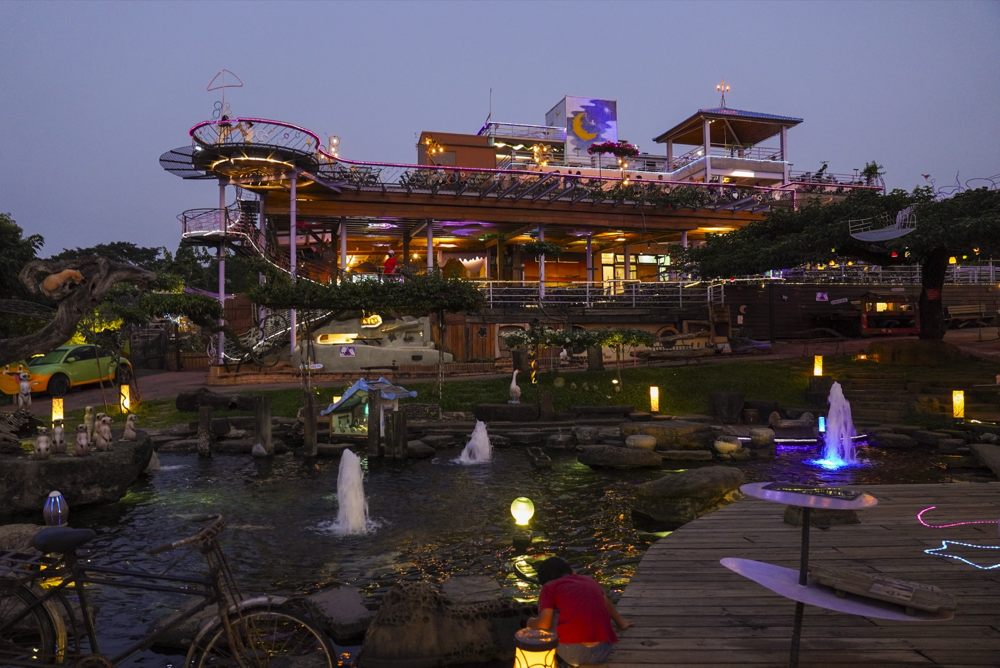
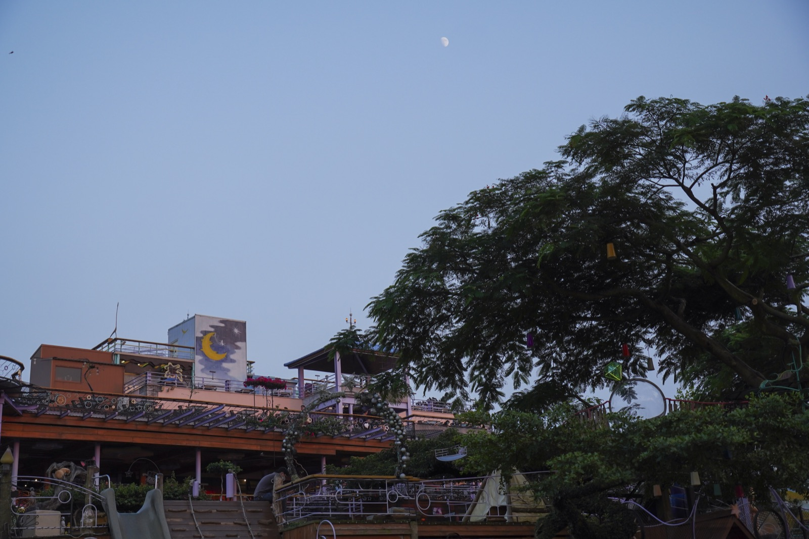
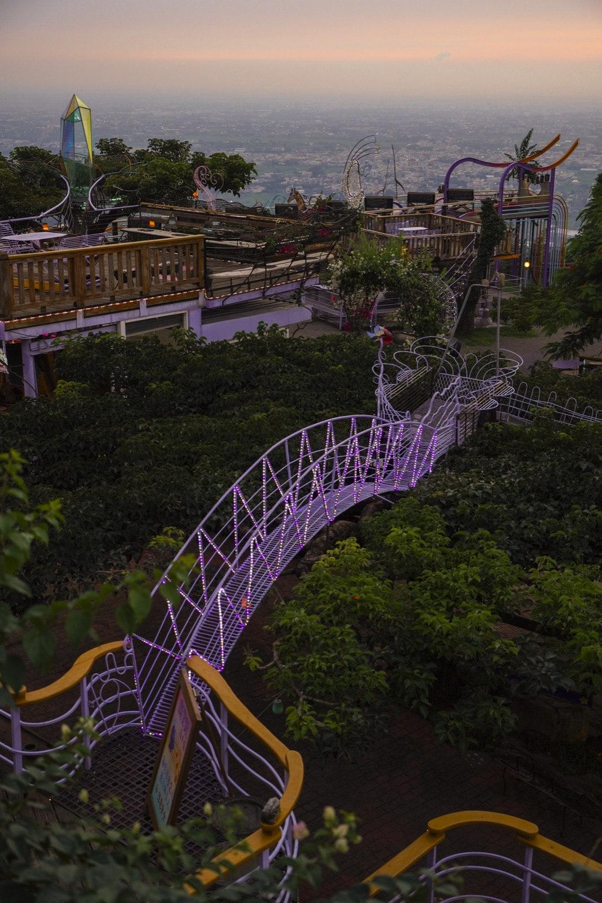
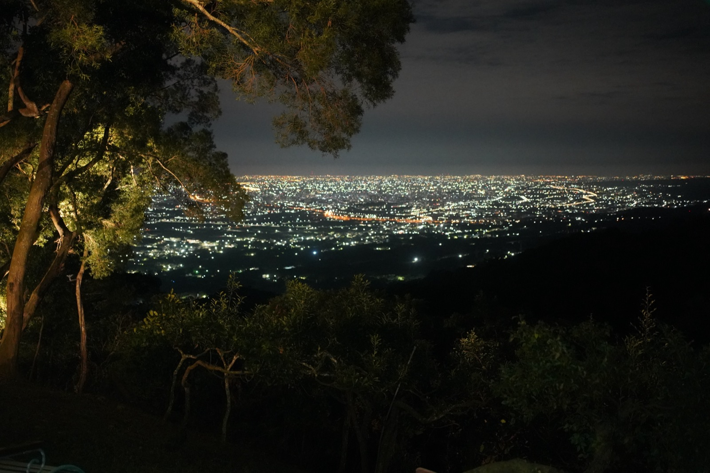
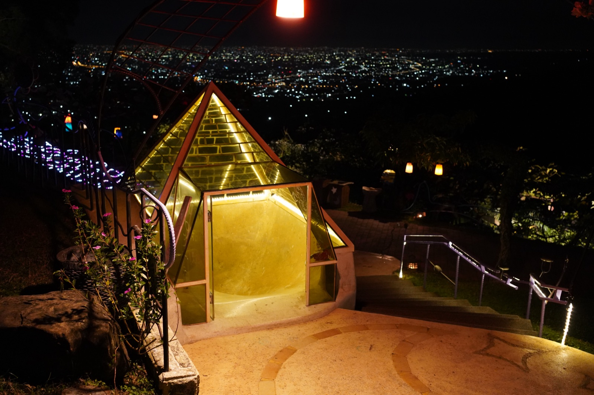

面對品牌世代斷層，傑弗德沒有只做年輕化行銷，而是連同百人組織、產品、設備、動線與容量限制一起重新整理。

品牌在年輕客群中出現認知斷層，過去有效的行銷、教育與服務流程難以對應新市場；現場接待量也有上限，客滿後便難以承接額外需求。
同步重建年輕化品牌溝通、調整百人團隊的教育與服務流程、優化菜單設備與出餐動線，並規劃餐盒型產品承接客滿後的需求。
品牌開始與年輕消費者重新建立連結，並透過組織與產品調整，發展出不完全受現場座位數限制的營運可能。
01 ／ 案例背景
星月天空是經營近二十年的大型景觀餐廳，擁有大型場域、穩定知名度及超過百人的營運團隊——這樣的規模本身，就是後續每個決策都必須考量的前提。
02
業主最早提出的需求，是希望品牌被更多年輕消費者看見。但傑弗德進場後看到的限制更複雜：品牌在年輕客群中出現認知斷層，過去有效的行銷方式、教育制度及服務流程，已無法完全對應新的消費市場；現場接待量也存在上限，客滿後便難以承接額外需求。
03
真正的問題不是單純曝光不足，而是新一代消費者缺少重新認識品牌的理由。若只增加流量，現場組織和出餐能力沒有同步調整，反而會放大營運壓力——這決定了整套決策的順序。
04
為什麼：過去的行銷語言與管道，已無法對應新一代消費者的接觸習慣。
影響：建立品牌重新被認識的入口，而非只是加大投放量。
為什麼：百人團隊的人員教育與服務流程，如果沒有同步更新，行銷帶來的關注會直接變成現場壓力。
影響：讓組織能力跟上品牌溝通的改變。
為什麼：接待量的上限不只是座位問題，也牽涉出餐效率。
影響：在既有場域條件下，提升可服務的實際容量。
為什麼：現場客滿後，原本只能放棄的需求其實可以被承接。
影響：建立不完全受現場座位數限制的新營運可能。
為什麼：百人組織的調整無法靠一次提案完成。
影響：策略方向能真正被現場團隊執行，而不是停留在報告階段。
05
06
釐清品牌認知斷層與現場容量限制的真實範圍。
訂定年輕化溝通方向，同步規劃組織與服務流程調整。
陪百人團隊完成人員教育、動線與設備調整。
推出餐盒型產品與新的品牌溝通內容。
以一年以上時間持續協助落實，而非只交付一份策略報告。
案例影像




07 ／ 成果
品牌開始重新建立與年輕消費者的連結，同時透過組織、產品及流程調整，建立不完全受現場座位數限制的新營運可能。
以上為質性觀察與階段性成果說明，實際執行內容依合約範圍為準，不代表對特定營業額、獲利或回本時間的保證。
如果你正在準備開店、轉型，或發現原本有效的方法逐漸失去作用，我們可以先從釐清問題開始。